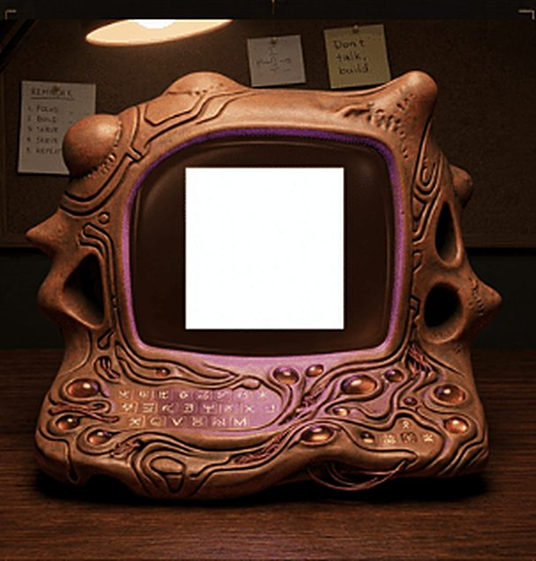

North Star Blueprint
14/10/2026
- Tu as scanné le code. La machine s'est allumée.
- Je l'ai construite pièce par pièce. Toutes ses commandes ne s'expliquent pas encore — certaines attendent leur tour.
- Pour l'instant, une seule est active : le test visuel 1. Elle a besoin de ton regard. 1 minute.
Lancer le test visuel 1
Code d'accès donné au stand